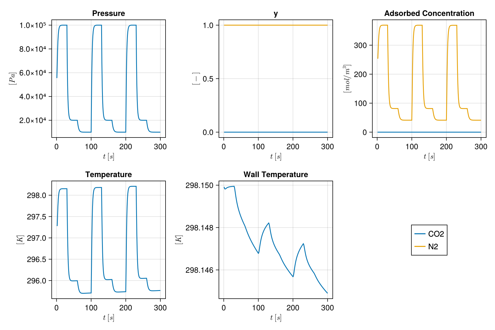
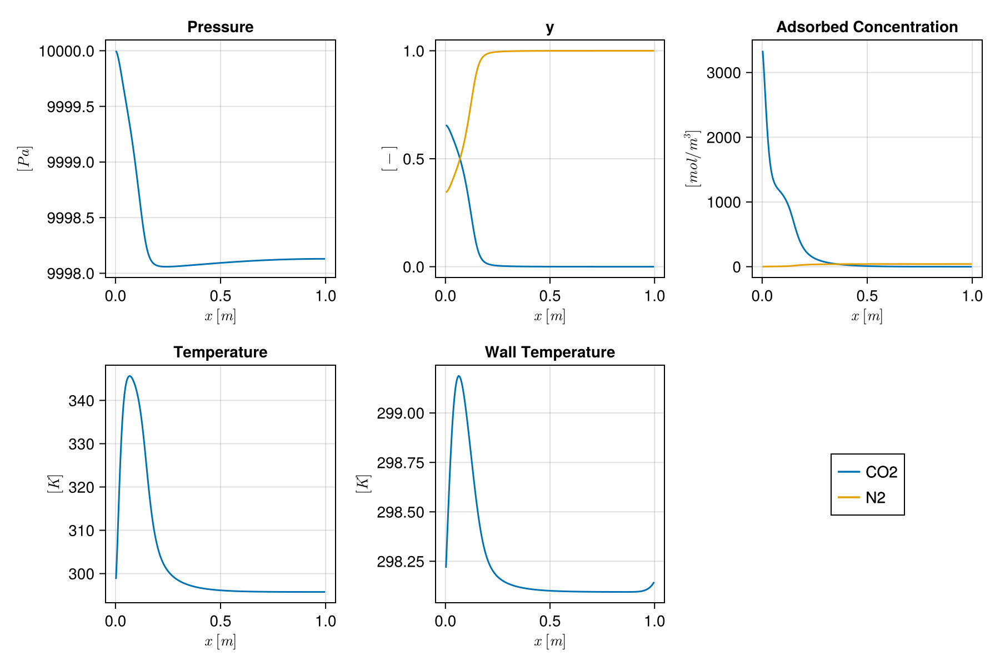

Cyclic Vacuum Swing Adsorption simulation
This example shows how to set up and run a cyclic vacuum swing adsorption simulation as described in Haghpanah et al. 2013
This simulation inolves injection of a two component flue gas (CO2 and N2) into a column of Zeolite 13X. The CO2 is preferentially adsorbed onto the zeolite. Pressure in the column is then reduced to enable desorption of CO2 for collection.
This is a four stage process comprising:
- Pressurisation: Where the RHS of the column is closed and flue gas is injected from the LHS, at velocity $v_{feed}$, to bring the column pressure up to $P_H$ (Pressure High).
- Adsorption: Where both ends of the column are open and flue gas is injected from the RHS at velocity $v_{feed}$. Pressure at the LHS is $P_H$.
- Blowdown: Where the LHS of the column is closed and the column is evacuated at $P_I$ (Pressure Intermediate).
- Evacuation: Where the RHS of the column is closed and the column is evacuated from the LHS at $P_L$ (Pressure Low).
Each stage is modelled using the same governing equations but with different boundary conditions. Adsorption onto Zeolite 13X is modelled with a dual-site Langmuir adsorption isotherm.
First we load the necessary modules
import Jutul
import MoccaWe define parameters, and set up the system and domain as in the Simulate DCB example.
constants = Mocca.HaghpanahConstants{Float64}()
permeability = Mocca.compute_permeability(constants)
axial_dispersion = Mocca.calc_dispersion(constants)
system = Mocca.TwoComponentAdsorptionSystem(; permeability = permeability, dispersion = axial_dispersion, p = constants)
ncells = 200
dx = sqrt(pi*constants.r_in^2)
mesh = Jutul.CartesianMesh((ncells, 1, 1), (constants.L, dx, dx))
domain = Mocca.mocca_domain(mesh, system);Create the model
Now we can assemble the model which contains the domain and the system of equations.
model = Jutul.SimulationModel(domain, system; general_ad = true);Set up the initial state
bar = Jutul.si_unit(:bar)
P_init = 1*bar
T_init = 298.15
Tw_init = constants.T_a
yCO2 = fill(1e-10, ncells)
y_init = hcat(yCO2, 1 .- yCO2)
state0, prm = Mocca.initialise_state_AdsorptionColumn(P_init, T_init, Tw_init, y_init, model);Set up the stage timings
Here we have 4 stages and we specify a duration in seconds that we will run each stage.
t_press = 15
t_ads = 15
t_blow = 30
t_evac= 40
t_stage = [t_press, t_ads, t_blow, t_evac];We also calculate the time taken to run one cycle and the total time at the end of each stage.
cycle_time = sum(t_stage)
step_end = cumsum(t_stage);Set up boundary conditions
We use different boundary conditions for each stage as described above. These boundary conditions are already programmed in Mocca. We just need to define their parameters.
d_press = Mocca.PressurisationBC(y_feed = constants.y_feed, PH = constants.p_high, PL = constants.p_low,
λ = constants.λ, T_feed = constants.T_feed, cell_left = 1, cell_right = ncells,
cycle_time = cycle_time, previous_step_end = 0)
d_ads = Mocca.AdsorptionBC(y_feed = constants.y_feed, PH = constants.p_high, v_feed = constants.v_feed,
T_feed = constants.T_feed, cell_left = 1, cell_right = ncells)
d_blow = Mocca.BlowdownBC(PH = constants.p_high, PI = constants.p_intermediate,
λ = constants.λ, cell_left = 1, cell_right = ncells,
cycle_time = cycle_time, previous_step_end = step_end[2])
d_evac = Mocca.EvacuationBC(PL = constants.p_low, PI = constants.p_intermediate,
λ = constants.λ, cell_left = 1, cell_right = ncells,
cycle_time = cycle_time, previous_step_end = step_end[3]);We collect the boundary conditions in the order of their associated stages
bcs = [d_press, d_ads, d_blow, d_evac];Define the full cyclic simulation by stacking subsequent stages in time for a specified number of cycles
numcycles = 3
timesteps = []
sim_forces = []
maxdt = 1
for j = 1:numcycles
for i in eachindex(t_stage)
numsteps = t_stage[i] / maxdt
append!(timesteps, repeat([maxdt], Int(floor(numsteps))))
append!(sim_forces, repeat([Jutul.setup_forces(model, bc=bcs[i])], Int(floor(numsteps))))
end
endSimulate
Now we are ready to run the simulation.
states, report = Jutul.simulate(state0, model, timesteps;
forces=sim_forces,
parameters = prm,
info_level = -1
);Plot
We plot primary variables at the outlet through time
outlet_cell = ncells
f_outlet = Mocca.plot_cell(states, model, timesteps, outlet_cell)
We also plot primary variables along the column at the end of the simulation
f_column = Mocca.plot_state(states[end], model)
Example on GitHub
If you would like to run this example yourself, it can be downloaded from the Mocca.jl GitHub repository.
This page was generated using Literate.jl.